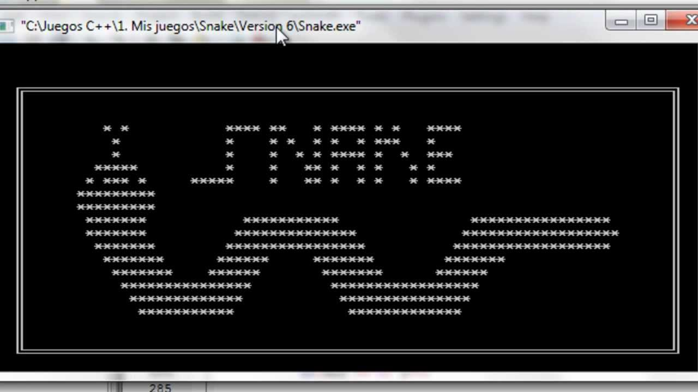
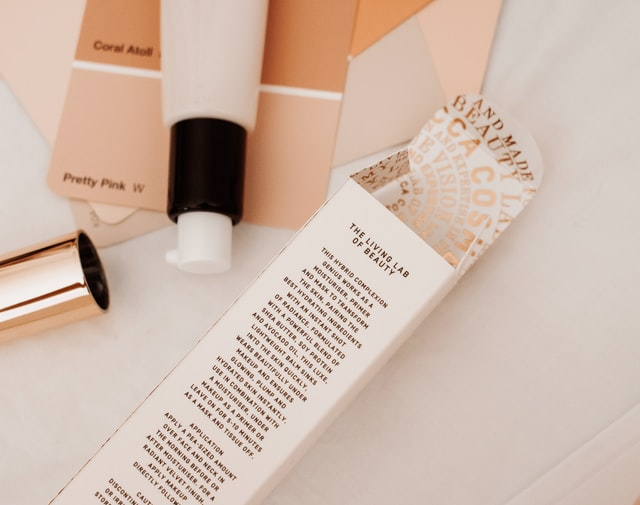
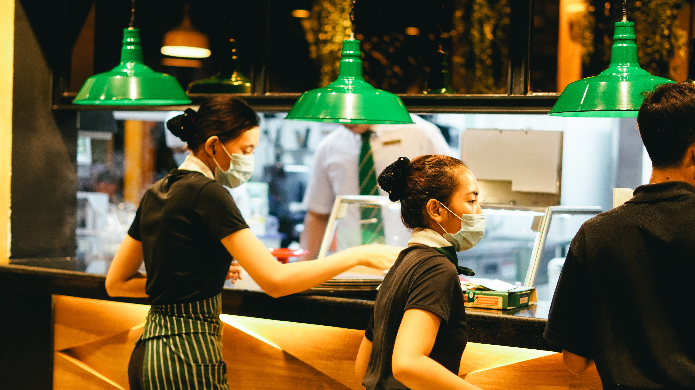
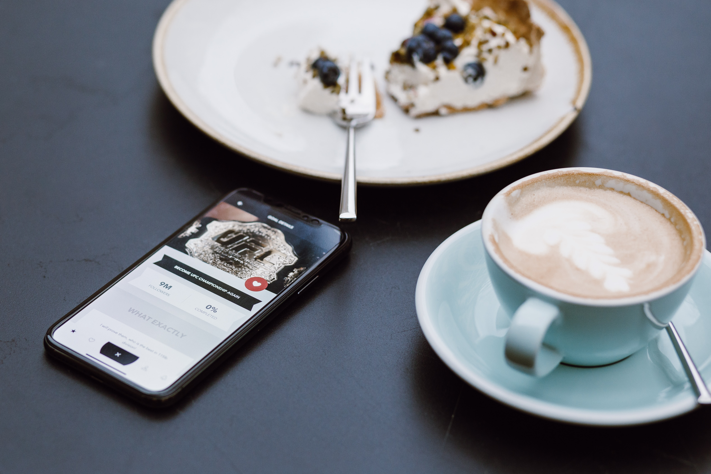

Proyectos .
Conoce los proyectos en los que he participado, que he realizado, y que tengo pensado realizar
-
Juego Snake Matematico en C .
7/7/2019
Snake la serpiente esta vez comiendo numeros
Repositorio aquiSnake Matematico en C .
Juego tradicional de la serpiente, esta vez comiendo numeros que dependiendo del numero aumenta o disminuye su tamaño
-
Web estatica de productos de belleza .
9/10/2020
Participacion pagina web, estatica de productos de belleza
Web estatica de productos de belleza .
Participacion pagina web, estatica de productos de belleza promer proyecto de aprendizaje de Html y CSS colaborando con compañeros de otra universidad
-
Participacion proyecto aplicacion MacRestaurant .
18/10/2021
App de domicilios de restauraurantes, Desarrollada en Java utilizando tecnologias como postman y docker donde el usuario podia realizar el pedido de un plato ofertado por un restaurante
Participacion proyecto aplicacion MacRestaurant .
Participacion en proyecto universitario de la creacion de una aplicacion de escritorio creada en java en la cual los restaurantes registran sus platos y los usuarios pueden hacer el pedido, aplicacndo tecnologias como postman y docker para el despliegue de servicios
-
Aplicacion de gestion estudiantil .
Fase de Investigacion
aplicacion de gestion estudiantil que permita mejorar el actual sistema de gestion que tiene la universidad

Aplicacion de gestion estudiantil .
Este proyecto consiste en desarrollar una aplicacion de gestion estudiantil que permita mejorar el actual sistema de gestion que tiene la universidad, para los distintos tramites que realizan los estudiantes que pueden ser automatizados o mejorados a nivel de eficiencia
-
Aplicacion de pedidos plaza de comidas centros comerciales .
Fase de Investigacion
Este proyecto consiste en desarrollar una aplicacion de gestion de pedidos de comida en una plaza de comidas de un centro comercial
Aplicacion de pedidos plaza de comidas centros comerciales .
Este proyecto consiste en desarrollar una aplicacion de gestion de pedidos de comida en una plaza de comidas de un centro comercial, donde el usuario mediante una tablet con nuestra aplicacion pueda ver todas las ofertas de cada establecimiento de la plaza de comidas y pueda generar su pedido desde su mesa y de distitos establecimientos, donde al final solo tendra que ir al establecimiento solo a recoger su pedido y cancelar el valor de este